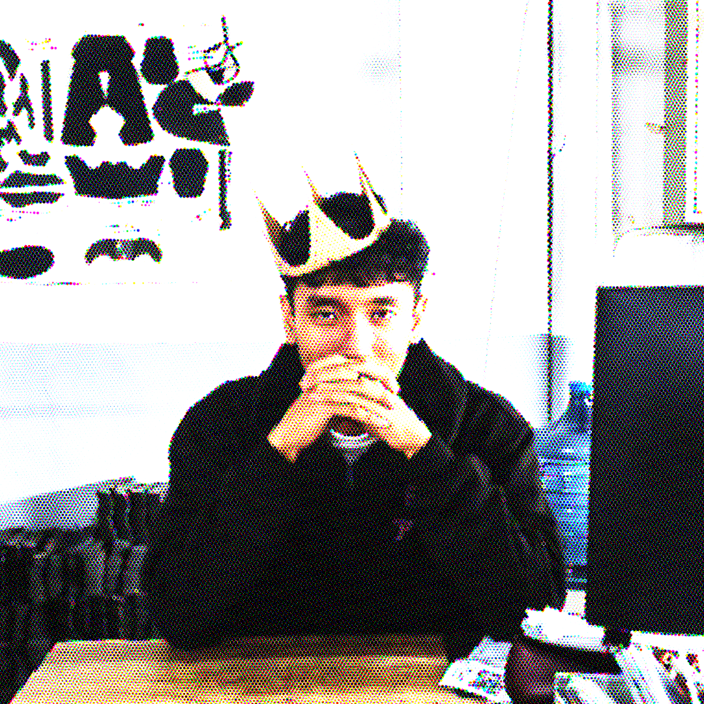

ARYXDEWW
A.K.A RexDeww / Rexonlinux-enthusiast | fictophile | stargazer
About Me
Hai, aku Arya. aku anti social & introvert + internet person hehe, salam kenal :D
Favourite Characters
- Shirasu Azusa
- Aiden Pearce
Favourite Songs
- Aden Foyer - Revolve
- *NSYNC - It's Gonna Be Me
- Backstreet Boys - Drowning
- Backstreet Boys - Shape Of My Heart
- Crayon Case - Gravits (NEW)
- Westlife &/ George Benson - Nothing's Gonna Change My Love For You
- Westlife - Evergreen
- Westlife - Fool Again
(Maybe) Frequently Asked Questions
1. "Jadi fictophile itu beneran mas?"
sedihnya iya, sampe ada kejadian plot twist aku berhenti jadi fictophile. misal kek beneran nikah di dunia nyata
(Pelajari lebih lanjut tentang "Fictophile".)
sedihnya iya, sampe ada kejadian plot twist aku berhenti jadi fictophile. misal kek beneran nikah di dunia nyata
(Pelajari lebih lanjut tentang "Fictophile".)
2. "Asal usul jadi Fictophile karena apa mas?"
kecintaan banget sama satu karakter fiksi wkwkw, sama karena ga becus aja kalo pacaran irl wkwkw dan takut hal buruk yang pernah kulakuin sebelumnya terjadi karena dulu pernah nyoba pacaran tp mentok LDR dan itupun aku yg nyakitin wkwkw, jadii...daripada hal yang sama terulang kembali, aku memilih jadi Fictophile dsn perlahan merubah dan memperbaiki sifat buruk ku ini :D
kecintaan banget sama satu karakter fiksi wkwkw, sama karena ga becus aja kalo pacaran irl wkwkw dan takut hal buruk yang pernah kulakuin sebelumnya terjadi karena dulu pernah nyoba pacaran tp mentok LDR dan itupun aku yg nyakitin wkwkw, jadii...daripada hal yang sama terulang kembali, aku memilih jadi Fictophile dsn perlahan merubah dan memperbaiki sifat buruk ku ini :D